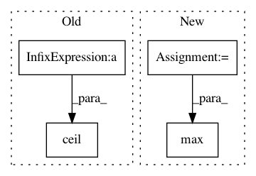

8f8ed00abdc2cd8eccf8308e3fc7aed833c5ae23,finetune/target_models/sequence_labeling.py,SequenceLabeler,__init__,#SequenceLabeler#,171
Before Change
d.update(kwargs)
super().__init__(**d)
if "n_epochs" not in kwargs.keys():
self.config.n_epochs = math.ceil(self.config.n_epochs * 1.5)
def _get_input_pipeline(self):
return SequencePipeline(
config=self.config, multi_label=self.config.multi_label_sequences
After Change
d.update(kwargs)
super().__init__(**d)
// If our basemodel has a default n_epochs > 5, use that; otherwise, use 5 epochs
base_model_epochs = self.config.base_model.settings.get("n_epochs", 5)
self.config.n_epochs = max(base_model_epochs, 5)
def _get_input_pipeline(self):
return SequencePipeline(
config=self.config, multi_label=self.config.multi_label_sequences
In pattern: SUPERPATTERN
Frequency: 3
Non-data size: 4
Instances
Project Name: IndicoDataSolutions/finetune
Commit Name: 8f8ed00abdc2cd8eccf8308e3fc7aed833c5ae23
Time: 2019-08-19
Author: matthew.bayer@indico.io
File Name: finetune/target_models/sequence_labeling.py
Class Name: SequenceLabeler
Method Name: __init__
Project Name: librosa/librosa
Commit Name: 1a322e7e4a9bbaad3c15a9876acad3a6652159d1
Time: 2015-07-01
Author: ebattenberg@gmail.com
File Name: librosa/core/constantq.py
Class Name:
Method Name: __early_downsample
Project Name: SpiNNakerManchester/sPyNNaker
Commit Name: ef3b051ba0dc69a02f0d7aa8e955bea26b334f51
Time: 2020-09-30
Author: alan.barry.stokes@gmail.com
File Name: spynnaker/pyNN/utilities/bit_field_utilities.py
Class Name:
Method Name: get_estimated_sdram_for_bit_field_region